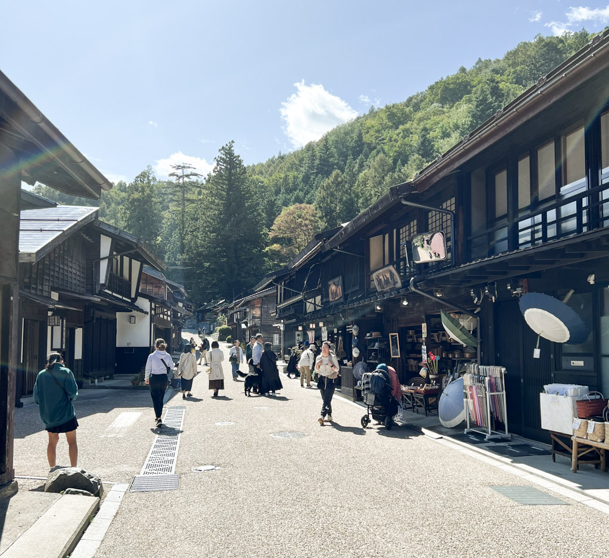
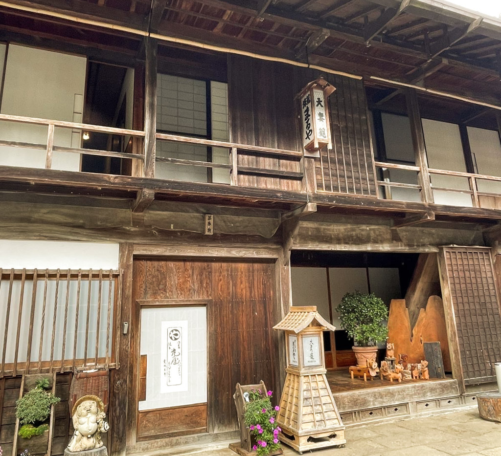

Hiking the Nakasendo trail
Nakasendo Trail Tips
Before hiking the Nakasendo, prepare well for the best experience:
-
Pack Light & Forward Your Luggage: Use a good-fitting backpack instead of wheeled luggage. Japan's luggage forwarding services
can send your main suitcases ahead. Tourist centers in Magome and Tsumago offer luggage forwarding between towns for a small fee.
-
Carry Essentials in a Day Pack: Include high-energy snacks, waterproof bag with medications and ID, collapsible walking sticks,
a trash bag, and rain gear. Wear hiking boots or sturdy closed-toe shoes.
-
Wi-Fi Availability: Wi-Fi may be limited, so pre-download translation apps and maps. Consider renting a pocket Wi-Fi device.
-
Book Ahead for Accommodations with Meals: Accommodations can be limited and book up quickly. Include dinner and breakfast in your reservations.
Where to Stay on the Nakasendo Road

The Nakasendo Trail offers traditional ryokan inns and locally-run minshuku (guesthouses) in each post town:
-
Magome: Tajimaya is a historic minshuku for those ending their hike here.
-
Tsumago: Stay in small, rustic minshuku and ryokans like Fujioto.
-
Kiso-Fukushima: Ideal for rest and onsens, with ryokans like Komanoyu.
-
Narai-juku: Offers cute and rustic minshuku, and the luxurious Byaku Narai, a modern inn with traditional aesthetics.
